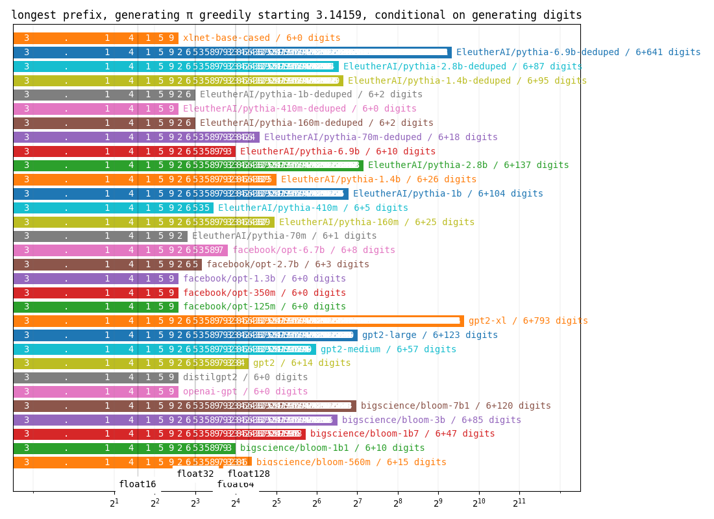
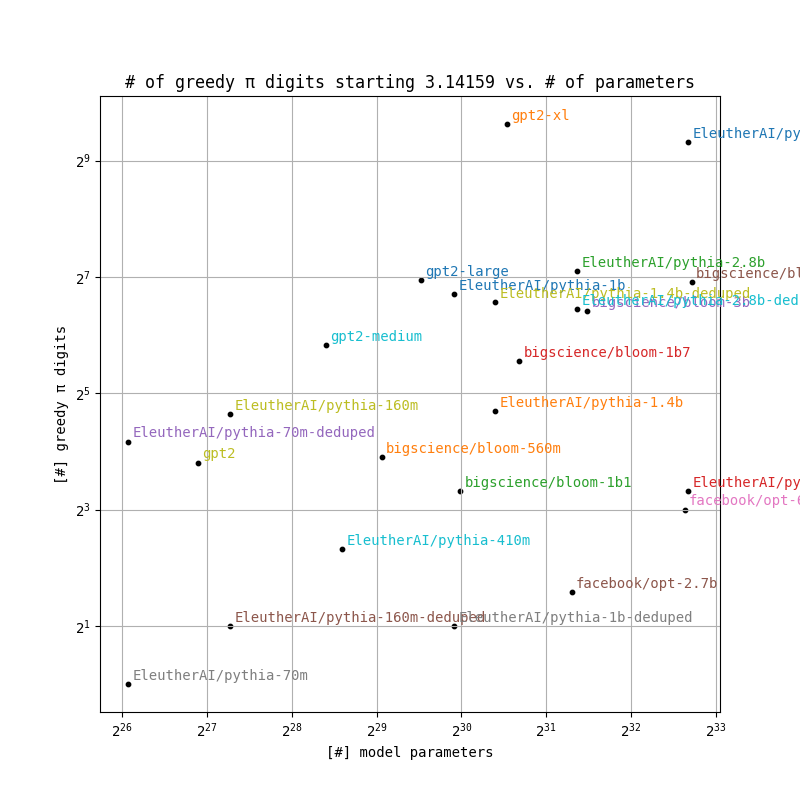
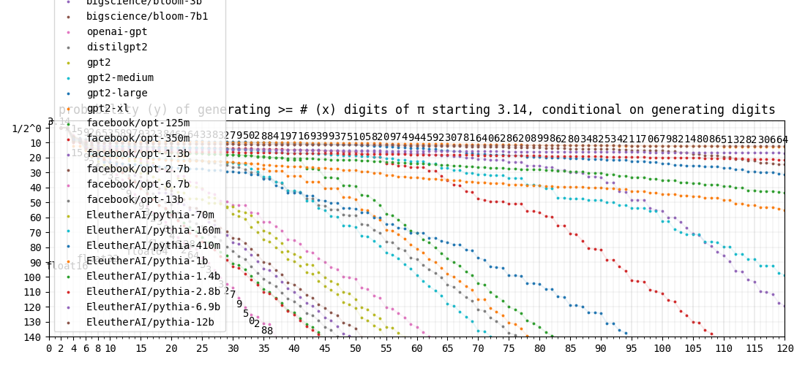
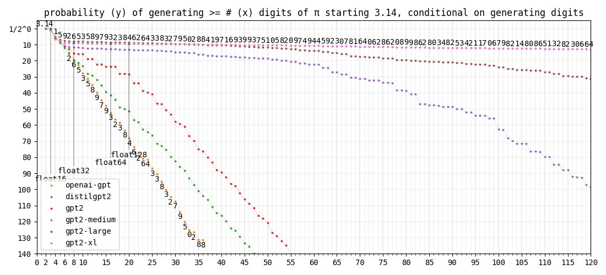
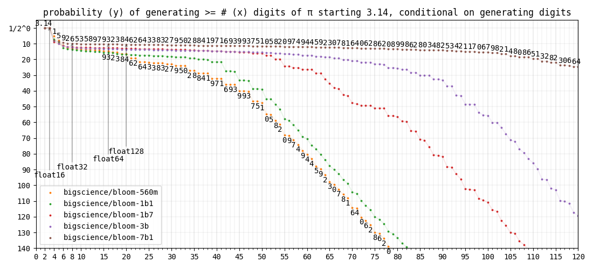
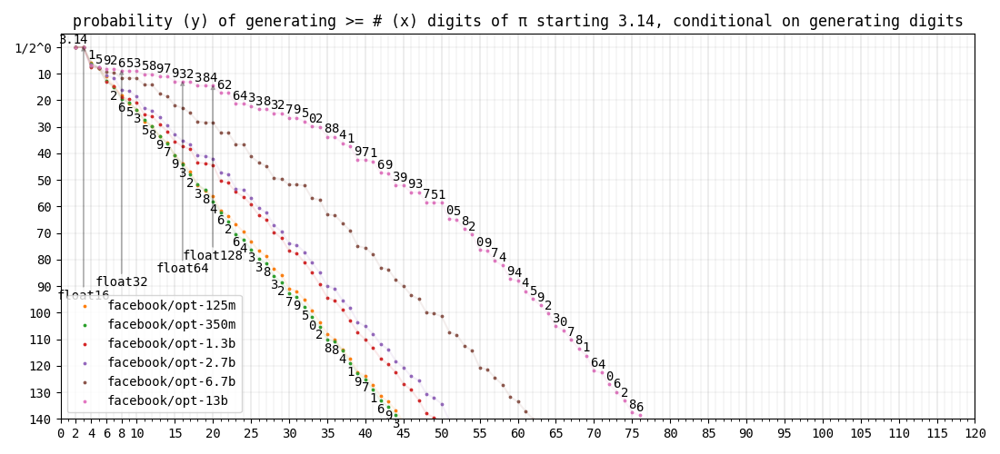
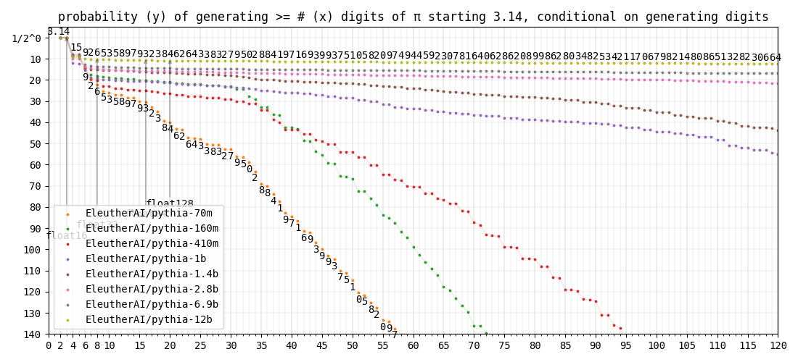
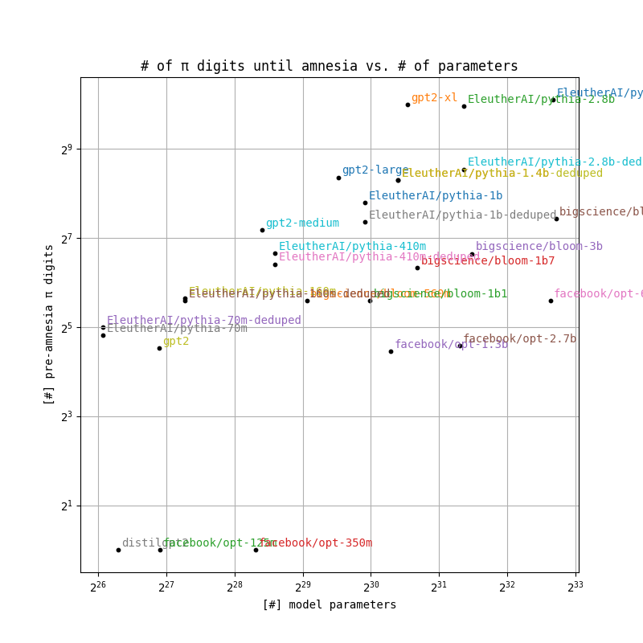

<< Piotr (Peter) Mardziel

- Question: How many digits of pi does gpt know?
- Question: Does gpt know some pi even if it does not generate it greedily one token at a time?
How many digits of pi does gpt know?
- GPT and similar models take as input a piece of text and output a prediction of what comes next. If they are given a the first part of pi, do they predict the next part? How big of a piece of pi can they produce this way?
- Given the text "3.14159", the model gpt2-xl, correctly picks the next 793 digits of pi before making a mistake. gpt1, on the other hand, makes a mistake right away giving us 0 additional digits. Results for other large language models are shown below under greedy pi.
- Models vary in size. Their pi-generating capability is shown as a function of their size in digits per parameter and enumerated in the table stats. gpt2-xl is best with 546.7 digits of pi per G=2^30 parameters.
- All results are conditioned on models generating digits and not other characters/words/tokens.
greedy pi
- Lines labeled float{16,32,64,128} indicate number of decimal digits needed to fully define pi for storage in respective floating point formats.
digits per parameter
stats
| model | # parameters (G=2^30) | # of greedy π digits beyond the starting 3.14159 | digits per G params |
|---|---|---|---|
| bigscience/bloom-560m | 0.52 G | 15 | 28.8 |
| bigscience/bloom-1b1 | 0.99 G | 10 | 10.1 |
| bigscience/bloom-1b7 | 1.60 G | 47 | 29.3 |
| bigscience/bloom-3b | 2.80 G | 85 | 30.4 |
| bigscience/bloom-7b1 | 6.58 G | 120 | 18.2 |
| openai-gpt | 0.11 G | 0 | 0.0 |
| distilgpt2 | 0.08 G | 0 | 0.0 |
| gpt2 | 0.12 G | 14 | 120.8 |
| gpt2-medium | 0.33 G | 57 | 172.5 |
| gpt2-large | 0.72 G | 123 | 170.6 |
| gpt2-xl | 1.45 G | 793 | 546.7 |
| facebook/opt-125m | 0.12 G | 0 | 0.0 |
| facebook/opt-350m | 0.31 G | 0 | 0.0 |
| facebook/opt-1.3b | 1.23 G | 0 | 0.0 |
| facebook/opt-2.7b | 2.47 G | 3 | 1.2 |
| facebook/opt-6.7b | 6.20 G | 8 | 1.3 |
| EleutherAI/pythia-70m | 0.07 G | 1 | 15.2 |
| EleutherAI/pythia-160m | 0.15 G | 25 | 165.4 |
| EleutherAI/pythia-410m | 0.38 G | 5 | 13.2 |
| EleutherAI/pythia-1b | 0.94 G | 104 | 110.4 |
| EleutherAI/pythia-1.4b | 1.32 G | 26 | 19.7 |
| EleutherAI/pythia-2.8b | 2.58 G | 137 | 53.0 |
| EleutherAI/pythia-6.9b | 6.39 G | 10 | 1.6 |
| EleutherAI/pythia-70m-deduped | 0.07 G | 18 | 274.4 |
| EleutherAI/pythia-160m-deduped | 0.15 G | 2 | 13.2 |
| EleutherAI/pythia-410m-deduped | 0.38 G | 0 | 0.0 |
| EleutherAI/pythia-1b-deduped | 0.94 G | 2 | 2.1 |
| EleutherAI/pythia-1.4b-deduped | 1.32 G | 95 | 72.1 |
| EleutherAI/pythia-2.8b-deduped | 2.58 G | 87 | 33.7 |
| EleutherAI/pythia-6.9b-deduped | 6.39 G | 641 | 100.4 |
| xlnet-base-cased | 0.11 G | 0 | 0.0 |
Does gpt know some pi even if it does not generate it greedily one token at a time?
- Yes. Let us look at pi generating probability instead of greedy pi length.
- If each model predicted digits according to their distributions instead of picking the most probable digits, what would be the probability of generating at least n digits of pi? This is shown in section pi probability.
- All models have some notion of pi until a point where pi probability degenerates at a fixed exponential (a straight diagonal line in the graphs).
- The point at which a model becomes as good as random at generating pi is "amnesia" in point of no more pi below.
pi probability
all
gpt
bloom
opt
pythia
point of no more pi
| model | # parameters (G=2^30) | # of π digits before amnesia | pre-amnesia digits per G params |
|---|---|---|---|
| bigscience/bloom-560m | 0.52 G | 48 | 92.2 |
| bigscience/bloom-1b1 | 0.99 G | 48 | 48.4 |
| bigscience/bloom-1b7 | 1.60 G | 80 | 49.9 |
| bigscience/bloom-3b | 2.80 G | 100 | 35.8 |
| bigscience/bloom-7b1 | 6.58 G | 172 | 26.1 |
| openai-gpt | 0.11 G | 0 | 0.0 |
| distilgpt2 | 0.08 G | 1 | 13.1 |
| gpt2 | 0.12 G | 23 | 198.5 |
| gpt2-medium | 0.33 G | 144 | 435.8 |
| gpt2-large | 0.72 G | 328 | 455.0 |
| gpt2-xl | 1.45 G | 1016 | 700.4 |
| facebook/opt-125m | 0.12 G | 1 | 8.6 |
| facebook/opt-350m | 0.31 G | 1 | 3.2 |
| facebook/opt-1.3b | 1.23 G | 22 | 18.0 |
| facebook/opt-2.7b | 2.47 G | 24 | 9.7 |
| facebook/opt-6.7b | 6.20 G | 48 | 7.7 |
| EleutherAI/pythia-70m | 0.07 G | 28 | 426.9 |
| EleutherAI/pythia-160m | 0.15 G | 50 | 330.7 |
| EleutherAI/pythia-410m | 0.38 G | 101 | 267.6 |
| EleutherAI/pythia-1b | 0.94 G | 222 | 235.6 |
| EleutherAI/pythia-1.4b | 1.32 G | 315 | 239.1 |
| EleutherAI/pythia-2.8b | 2.58 G | 994 | 384.6 |
| EleutherAI/pythia-6.9b | 6.39 G | > 1591 | > 249.1 |
| EleutherAI/pythia-70m-deduped | 0.07 G | 32 | 487.9 |
| EleutherAI/pythia-160m-deduped | 0.15 G | 48 | 317.5 |
| EleutherAI/pythia-410m-deduped | 0.38 G | 85 | 225.2 |
| EleutherAI/pythia-1b-deduped | 0.94 G | 164 | 174.0 |
| EleutherAI/pythia-1.4b-deduped | 1.32 G | 315 | 239.1 |
| EleutherAI/pythia-2.8b-deduped | 2.58 G | 371 | 143.5 |
| EleutherAI/pythia-6.9b-deduped | 6.39 G | 1096 | 171.6 |
| xlnet-base-cased | 0.11 G | 0 | 0.0 |